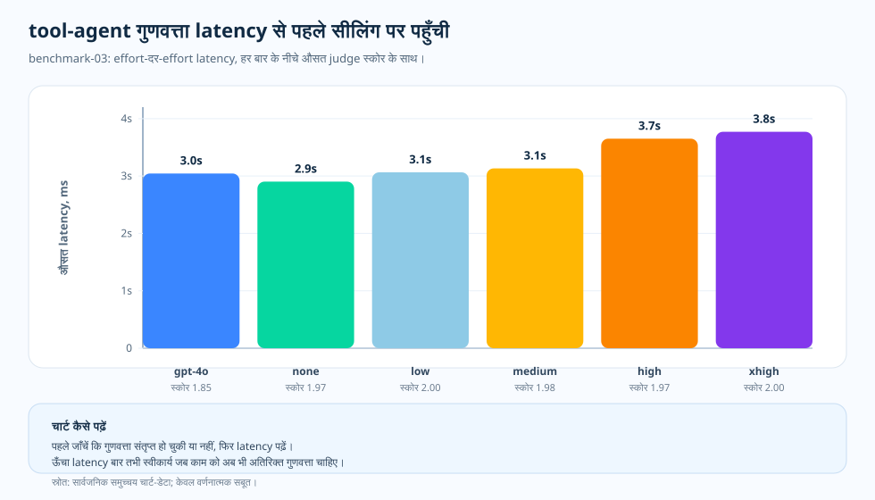

विषय-लेख: benchmark-03 टूल-एजेंट
टूल-एजेंट: गुणवत्ता की ऊपरी सीमा छूने के बाद असली अंतर लेटेंसी का होता है
टूल इस्तेमाल करने वाला एजेंट ग़लती करे, तो पहली सहज प्रतिक्रिया होती है: इसे थोड़ा और सोचने दें। यह तर्कसंगत लगता है—टूल-आधारित काम में योजना, टूल-चयन, मध्यवर्ती स्थिति और उत्तर का संयोजन शामिल होता है। लेकिन यदि टूल-मार्ग पर्याप्त अच्छा हो और मूल्यांकन स्कोर पहले से शीर्ष के पास हो, तो अतिरिक्त रीज़निंग स्कोर को वहीं रखते हुए केवल लेटेंसी और लागत बढ़ा सकती है। benchmark-03 टूल-एजेंट के इस हिस्से में इन दोनों संभावनाओं की जाँच करता है।
इस सहज अनुमान को क्यों जाँचा
हालात जाने-पहचाने हैं। टीम टूल इस्तेमाल करने वाला एजेंट जारी करती है, कुछ मामलों में उसे चूकते देखती है और सबसे पहले रीज़निंग स्तर बढ़ाने का मन करता है। तर्क ठीक है। एजेंट का काम सिर्फ़ याद से जवाब देना नहीं है — उसे योजना बनानी होती है, सही टूल चुनना होता है, बीच की स्थिति सँभालनी होती है, और फिर उत्तर जोड़ना होता है। इतनी संरचना वाले काम में “और सोचने दें” पहला स्वाभाविक क़दम लगता है।
लेकिन यहाँ दो अलग व्याख्याएँ जाँचनी पड़ती हैं। हो सकता है अतिरिक्त रीज़निंग सचमुच टूल-योजना सुधारे और उत्तर बेहतर करे। या फिर टूल-मार्ग और मानदंड मिलकर ऊपरी सीमा बना दें—एजेंट को पर्याप्त अच्छा मार्ग मिलते ही अतिरिक्त रीज़निंग स्कोर को शीर्ष के पास रखे और केवल लेटेंसी व लागत बढ़ाए। benchmark-03 जाँचता है कि अमूर्त बहस नहीं, बल्कि मापे गए हिस्से पर कौन-सी व्याख्या सही बैठती है।
इसलिए हमने इसे मापा। benchmark-03 टूल-एजेंट के इस हिस्से को स्थिर रखता है, अलग मॉडल और सेटिंग वाले कॉन्फ़िगरेशन पर चलता है—GPT-4o आधार-रेखा, फिर GPT-5.2 के none, low, medium, high और xhigh। इन्हें एक ही मॉडल की सतत रीज़निंग-सीढ़ी न समझें। हर कॉन्फ़िगरेशन में लेटेंसी, लागत और टोकन-संरचना के साथ औसत मूल्यांकन स्कोर पढ़ा गया। GPT-5.2 ने GPT-4o आधार-रेखा से गुणवत्ता बढ़ाई, लेकिन GPT-5.2 के भीतर गुणवत्ता 1.97–2.00 की ऊपरी सीमा के पास सिमट गई, जबकि लागत, लेटेंसी और रीज़निंग टोकन बढ़ते रहे। नीचे का एक-पृष्ठ सार यही बात एक फ़्रेम में कहता है, और आगे के खंड उसका मापा हुआ विवरण देते हैं।

प्रश्न
टूल-एजेंट की गुणवत्ता पहले से शीर्ष के पास हो, तो ऊँचे रीज़निंग स्तर से क्या बदलता है?
साक्ष्य
benchmark-03 के गुणवत्ता, लागत, लेटेंसी और टोकन-संरचना चार्ट।
नतीजा
GPT-5.2 की गुणवत्ता सभी रीज़निंग स्तरों पर 1.97–2.00 की ऊपरी सीमा के पास रही, जबकि लागत प्रति अनुरोध $0.002762 से $0.003499 और लेटेंसी 2.9s से 3.8s तक बढ़ी।
निर्णय
टूल-एजेंट काम को गुणवत्ता की ऊपरी सीमा छूने वाले सबसे कम रीज़निंग स्तर पर भेजें। उससे ऊँचे स्तर को अलग से उचित ठहराई जाने वाली लागत और लेटेंसी मानें, डिफ़ॉल्ट नहीं।

ऊपरी-सीमा प्रभाव ही मुख्य बात है
benchmark-03 ने सीधी एकदिश वृद्धि नहीं दिखाई। GPT-4o का औसत मूल्यांकन स्कोर 1.85 था। GPT-5.2 ने none पर 1.97, low पर 2.0, medium पर 1.98, high पर 1.97 और xhigh पर 2.0 हासिल किया। यह आधार-रेखा से सुधार है, पर साथ ही ऊपरी सीमा भी छू ली गई है।
कई कॉन्फ़िगरेशन शीर्ष के पास सिमट जाएँ, तो रीज़निंग स्तर बढ़ाना अपने-आप सार्थक नहीं रहता। अगला साक्ष्य लेटेंसी, टोकन-संरचना और समुच्चय स्कोर में छिपे विफलता-प्रकारों से आता है।
चार्ट कैसे पढ़ें
गुणवत्ता पहले से शीर्ष के पास सिमट चुकी है, इसलिए चार्ट की पट्टी-ऊँचाई लेटेंसी दिखाती है। X-अक्ष मॉडल और सेटिंग का कॉन्फ़िगरेशन है, Y-अक्ष औसत लेटेंसी (सेकंड) है। हर पट्टी के नीचे साथ वाला औसत मूल्यांकन स्कोर है।
यह हिस्टोग्राम नहीं, समुच्चय कॉन्फ़िगरेशन की तुलना है। यदि दो कॉन्फ़िगरेशन की गुणवत्ता पास-पास है, तो छोटी पट्टी पूछती है कि अधिक प्रतीक्षा से कोई स्पष्ट लाभ मिलता है या नहीं।
टूल व्याख्या क्यों बदल देते हैं
टूल-एजेंट काम में टूल-चयन, मध्यवर्ती स्थिति और उत्तर का संयोजन शामिल है। इसलिए वह छोटे तथ्यात्मक काम से अधिक माँग वाला है। समुच्चय गुणवत्ता-स्कोर अलग व्यवहार भी छिपा सकता है: कोई कॉन्फ़िगरेशन इसलिए सफल हो सकता है कि टूल ने अधिकांश काम किया, या सही टूल चुनने के बाद भी कमज़ोर सारांश के कारण नीचे जा सकता है।
चार्ट जाँच की आवश्यकता समाप्त नहीं करता; वह बताता है कि कहाँ देखना है। यदि सख़्त 2.00 चाहिए, तो उस सीमा पर सबसे पहले low पहुँचता है। यदि शीर्ष के पास का स्कोर पर्याप्त है, तो आधार-रेखा जैसी लेटेंसी के पास none सीमा पार करता है। दोनों स्थितियों में नियम एक है: मानक पूरा करने वाला सबसे कम कॉन्फ़िगरेशन चुनें और ऊँचे रीज़निंग स्तर से पहले लागत व लेटेंसी देखें।
याद रखने योग्य बिंदु
टूल-एजेंट बेंचमार्क को दो चरणों में पढ़ें। पहले पूछें कि क्या रीज़निंग ने सहीपन सुधारा। फिर, यदि गुणवत्ता शीर्ष के पास संतृप्त हो गई है, तो देखें कि कौन-सा कॉन्फ़िगरेशन लेटेंसी और टोकन का दबाव नियंत्रित रखता है। दूसरा सवाल वैकल्पिक नहीं; वही नतीजे को बेंचमार्क के बाहर उपयोगी बनाता है।
साक्ष्य की तालिका
docs/blog/data/chart-data/cost-curves-effort/benchmark-03/quality.json
से आते हैं; साक्ष्य डैशबोर्ड
(प्रदत्त चार्ट डेटा) में
लेटेंसी और लागत चार्ट के साथ पढ़ें।

| साक्ष्य-पंक्ति | मीट्रिक A | मीट्रिक B | क्या जुड़ता है |
|---|---|---|---|
| GPT-4o आधार-रेखा | मूल्यांकन स्कोर 1.85 | औसत लेटेंसी 3.0s | तुलना की आधार-रेखा, पर ऊपरी सीमा नहीं। |
| GPT-5.2 none | मूल्यांकन स्कोर 1.97 | औसत लेटेंसी 2.9s | लगभग समान लेटेंसी पर बेहतर गुणवत्ता। |
| GPT-5.2 low | मूल्यांकन स्कोर 2.00 | औसत लेटेंसी 3.1s | थोड़ी लेटेंसी-वृद्धि पर ऊपरी सीमा का स्कोर। |
| GPT-5.2 xhigh | मूल्यांकन स्कोर 2.00 | औसत लेटेंसी 3.8s | वही ऊपरी सीमा का स्कोर, लेकिन अधिक धीमा। |
स्रोत और साक्ष्य-सीमा
ऊपर का हर मान इस रिपॉज़िटरी की किसी सार्वजनिक कलाकृति तक खोजा जा सकता है और हर लागत-दावा एक दिनांकित मूल्य-स्नैपशॉट पर आधारित है। गुणवत्ता की ऊपरी सीमा छूते ही सबसे कम रीज़निंग स्तर पर रुकने की सलाह इस लेख की अपनी संचालन-व्याख्या है। नीचे की दो श्रेणियाँ बताती हैं कि प्रलेखित इनपुट कहाँ ख़त्म होता है और अनुमान कहाँ से शुरू होता है।
- [1] स्तर 1 — कार्यप्रणाली अनुबंध: यह रिपॉज़िटरी,
docs/05-methodology.md(v1.0)। हर कॉन्फ़िगरेशन में N = 20 लिखित नमूने, R = 3 दोहराव और केवल सार्वजनिक समुच्चय का यह हिस्सा। चार्ट की व्याख्या इसी स्थिर दृष्टिकोण पर आधारित है; त्रुटि-पट्टियाँ मानक विचलन हैं और N = 20 पर p-value का दावा नहीं। - [2] स्तर 1 — PAYG मूल्य स्नैपशॉट: प्रति अनुरोध लागत इस रिपॉज़िटरी की
pricing/azure-openai-payg-2026-05.yamlसे निकाली गई है। स्रोत: Azure OpenAI मूल्य पृष्ठ (2026-05-19 को देखा गया), संग्रहित प्रति। सूची-मूल्य बदलने पर लागत भी बदलेगी। - [3] स्तर 2 — benchmark-03 हिस्से का मापन: यह रिपॉज़िटरी,
benchmarks/03-tool-using-agent/analysis.json। गुणवत्ता की पट्टियों—GPT-4o आधार-रेखा 1.85 और GPT-5.2 के 1.97 (none), 2.00 (low), 1.98 (medium), 1.97 (high), 2.00 (xhigh)—का यही स्रोत है। इन्हीं अलग मॉडल/सेटिंग वाले कॉन्फ़िगरेशन में लेटेंसी 2.9s से 3.8s और प्रति अनुरोध लागत $0.002762 (none) से $0.003499 (xhigh) तक बढ़ती है। - [4] स्तर 2 — रेंडर किया गया चार्ट डेटा: यह रिपॉज़िटरी,
docs/blog/data/chart-data/cost-curves-effort/benchmark-03/cost-per-request.json,quality.json,latency.json। इन्हेंdocs/blog/data/chart-data/token-composition/benchmark-03/tokens.jsonके साथ पढ़ने पर साक्ष्य मिलता है कि रीज़निंग टोकन प्रति अनुरोध 0 से 52.15 तक बढ़े, फिर भी गुणवत्ता की पट्टियाँ ऊपरी सीमा से नहीं हिलीं। - [5] साक्ष्य डैशबोर्ड: रेंडर किया गया benchmark-03 गुणवत्ता और लागत का संयुक्त चार्ट उन्हीं कलाकृतियों का लेखा-परीक्षण योग्य रूप है।
यह मापा गया हिस्सा क्या सिद्ध करता है और क्या नहीं: इस टूल-एजेंट हिस्से में GPT-5.2 के भीतर रीज़निंग स्तर बढ़ाने पर गुणवत्ता संतृप्त रही—स्कोर 1.97–2.00 की पट्टी से बाहर नहीं गया—जबकि लागत बढ़ती रही। GPT-4o आधार-रेखा अलग मॉडल का कॉन्फ़िगरेशन है, इसलिए इसे उसी स्तर-क्रम का हिस्सा न मानें। यह भी सिद्ध नहीं होता कि यही ऊपरी सीमा छोटे तथ्यात्मक, बहु-चरणीय या एकीकरण काम में इसी स्तर पर दिखेगी। हर विषय का अपना मापन है।
इस साक्ष्य से क्या कहा जा सकता है
टूल-एजेंट काम के लिए सही नियम “रीज़निंग स्तर बढ़ाएँ” नहीं, बल्कि “आवश्यक एजेंट-व्यवहार बनाए रखने वाला सबसे कम स्तर खोजें” है।
व्यावहारिक नियम
- गुणवत्ता चार्ट को उसी benchmark-03 कॉन्फ़िगरेशन के लागत और लेटेंसी चार्ट के साथ पढ़ें।
- गुणवत्ता मानक—सख़्त 2.00 हो या स्वीकार्य शीर्ष-पास स्कोर—पूरा करने वाला सबसे कम रीज़निंग कॉन्फ़िगरेशन खोजें और उसे डिफ़ॉल्ट बनाएँ।
- उससे ऊँचे स्तर को दिखाई देने वाले स्कोर-सुधार से उचित ठहराई जाने वाली लागत और लेटेंसी मानें।
- भरोसा करने से पहले समुच्चय के भीतर के मामले जाँचें। सफल कॉन्फ़िगरेशन रीज़निंग नहीं, टूल पर टिका हो सकता है।
- वर्कलोड-रूप बदलने पर दोबारा मापें। यह ऊपरी सीमा टूल-एजेंट काम तक सीमित है।
व्यावहारिक नियम: इस टूल-एजेंट हिस्से में गुणवत्ता ऊपरी सीमा छू ले, तो रीज़निंग स्तर बढ़ाना बंद करें। अतिरिक्त रीज़निंग से अधिक स्कोर नहीं मिला; केवल लागत और लेटेंसी बढ़ी।
आगे: PTU/PAYG क्रॉसओवर: क्षमता का नतीजा नहीं, योजना की रेखा — वर्कलोड का आकार तय करने के बाद आरक्षित थ्रूपुट कब PAYG से बेहतर होता है?